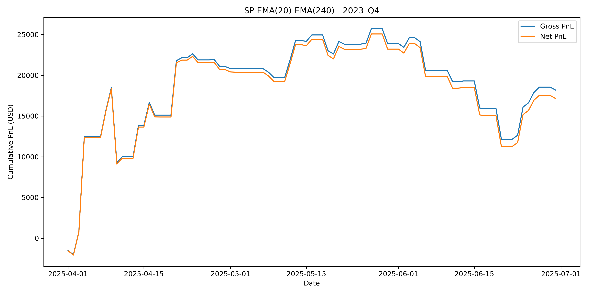

Quantitative Strategies on High Frequency Data Project
Team 6: Sevin Tan Erdi (474531), Thuan Tran (476708)
Group 1 | Strategy selection
- Goal: robust intraday trend capture with controlled turnover
- Candidates tested:
- EMA crossover (trend-following)
- Bollinger bands (mean-reversion)
- EMA crossover (trend-following)
- Key observation:
- High-frequency mean-reversion signals generated excessive trading
- Transaction costs dominated gross PnL in intraday data
- Final choice: EMA crossover with volatility-scaled entry/exit (hysteresis)
- trades only when signals are sufficiently strong
- significantly reduces noise-driven trades
Key design principle
- The strategy is not designed to be constantly in the market
- Positions are opened only when the trend signal is strong relative to current volatility
- Small price fluctuations are intentionally ignored
- This design choice:
- reduces signal noise
- lowers transaction costs
- improves net performance stability
Signal construction
Trend direction: determined by EMA(20) − EMA(240)
- positive spread → long bias
- negative spread → short bias
Signal strength: absolute EMA spread normalized by price
Volatility scaling:
- signal strength is compared to recent realized volatility
- trades are allowed only when the signal exceeds a volatility-based threshold
Parameters
- EMA fast / slow: 20 / 240
- Volatility window: 120 bars
- Entry / exit multipliers: *k_enter = 10, **k_exit = 5*
- Point value: 50 USD / point
- Transaction cost: 12 USD per trade
Results


Results per quarter (1/2)


Results per quarter (2/2)


Trend-following performance is highly regime-dependent, with convex payoffs during persistent trends and drawdowns during sideways markets.
Performance Metrics
Overall performance
- Strategy delivers positive cumulative PnL, with net PnL closely tracking gross PnL
- Transaction costs are material but not performance-destroying
Strategy behavior
- Gains are generated primarily during persistent trends, consistent with the EMA(20)–EMA(240) trend-following design
- Low trading frequency (≈ 1 trade/day) limits overtrading and cost drag
Regime dependence
- Strong performance in trending regimes: 2023 Q1, 2024 Q2, 2025 Q2
- Drawdowns in sideways / choppy markets: 2023 Q3, 2024 Q2, 2025 Q2
Risk-adjusted performance
- Sharpe and Calmar ratios positive in profitable quarters
- Deterioration in non-trending regimes highlights volatility-adjusted trend dependence
Key takeaway: Performance is driven by regime-dependent trend persistence, not constant market exposure.